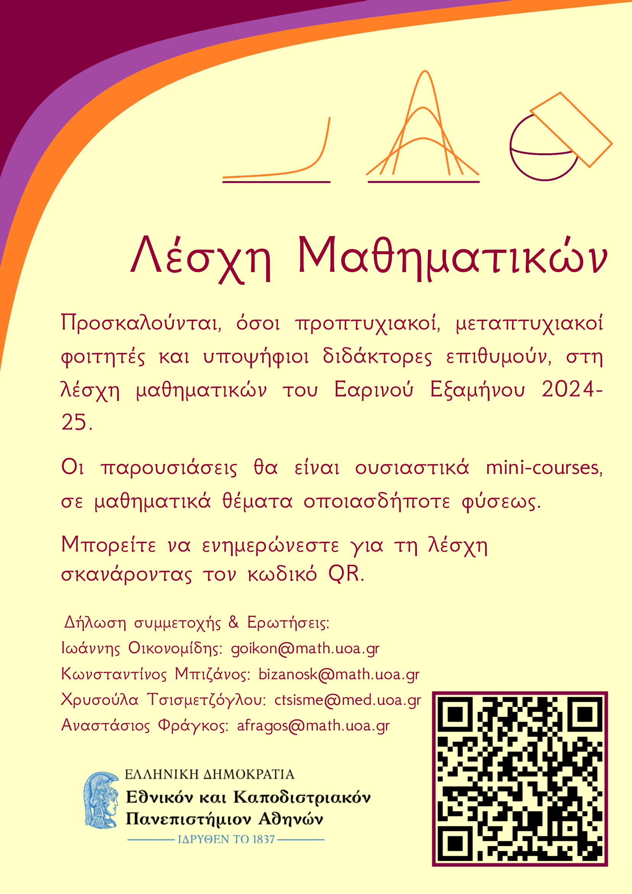

❖ News & Seminars
28 of February 2025
If you are new with the Tempi train crash, you can check the wikipedia page of it here. The government has repeatedly covered up its political responsibilities, leading to the climax of this situation, the great protests of the Greeks throughout Greece as well as abroad.
Since you will hear various inaccuracies about the number of citizens who attended the protests, we have collected some photos from the marches, from 71 cities around the world.

1-5 of February 2025
This on-line congress is an opportunity to share current research results on knot theory from around the world. All talks will be on-line over zoom, with zoom links available on the following webpage before the conference.
The website:

Spring Semester 2024-25
This spring semester (2024-25) the Mathematics Group of graduate and doctorate students will continue. Organised by Anastasios Fragkos, Ioannis Oikonomidis, Chrisoula Tsismetzoglou and Konstantinos Bizanos.
The website for this semester:

Saturday & Sunday 21-22/12/2024, Amphitheatre Karatheodory
It's probably good to attend this conference. They have decided to call it COMBRA (COMbinatorics & PRobability in Athens), possibly because to do combinatorics you have to do extreme manoeuvres. I still don't understand how they come up with their mathematical ideas.
Friday 22/11/2024, 15.00-16.00, A21
Dimitrios Gazoulis, Post-Doctorate, NKUA.
Mini courses on Homogenization Part II: The proof of the Homogenization theorem
We briefly recall the notion of H-convergence and the div-curl lemma that was proved in Part II of these series of lectures. Then, we provide an abstract setting in the spirit of Lax Milgram formulation that is utilized, together with the compensated compactness theorem, to complete the proof of the Homogenization theorem. Finally, we will prove the corrector result stated in the previous lecture, that gives an approximation for the solutions to the Homogenization problem.
Friday 01/11/2024, 15.00-16.00, A21
Dimitrios Gazoulis, Post-Doctorate, NKUA.
Mini courses on Homogenization Part II: H-convergence and the Homogenization theorem
We introduce the notion of H-convergence for operators in divergence form that are not necessarily symmetric. We state the main properties of H-convergence and compare them with G-convergence. Then, we provide the main tool for the homogenization theorem based on compensated compactness, that is, the div-curl lemma. Finally, we state the homogenization theorem for H-convergence and define the corrector matrix that gives an approximation for the solutions of the homogenization problem, i.e. the corrector result.
Friday 25/10/2024, 15.00-16.00, A21
Dimitrios Gazoulis, Post-Doctorate, NKUA.
Mini courses on Homogenization Part I: Γ-convergence, G-convergence and their relation
We briefly introduce the notion of Γ-convergence and it's main properties together with two basic examples. The first example is the Γ-limit of the Modica-Mortola functional which relates phase transition type problems with minimal surfaces. The second, is an example from homogenization. Then, we introduce the notion of G-convergence for elliptic equations in divergence form and we state the homogenization theorem of G-convergence for elliptic operators. Finally, we illustrate the relationship between G-convergence with Γ-convergence and the second example stated in the beginning allow us to compare the G-limit with the weak* L∞ limit.
Saturday 19 to Monday 21/10/2024
From Saturday 19 to Monday 21/10, the UoA Festival will take place, in the centre of Athens (Historical building of the National and Kapodestrian University of Athens).
Everyone interested in studying mathematics in NKUA can find us there (open days to get to know the NKUA’s 42 departments, with the presence of members of the teaching and research staff). I will be representing the mathematics department Sunday 20/10, hours 12:00-16:00.
Every Friday 15:15, Dept. of Mathematics NKUA, in A31 or A32
The webpage of this years seminar can be found below.
By Cédric Villani and Nicholas Alikakos
Cédric Villani on "Νέα Τηλεόραση Κρήτης".
Nicholas Alikakos on "Νέα Τηλεόραση Κρήτης".
Winter Semester 2024-25
After some discussion with the students of "Grad. Progr.: Mathematics" and with doctoral students of NKUA, Dept. of Mathematics, we proudly announce the creation of the first "Mathematics Group", organised by Anastasios Fragkos, Ioannis Oikonomidis, Chrisoula Tsismetzoglou, Konstantinos Bizanos and Vagelis Katsantonis.
The website for this semester:

20th of May 2024, Online
Lecture by A. Tzella, on advection, diffusion and geometry.
08th of July 2024, Chania Crete
Summer school and research conference Festum-π.
Between others, C. Villani, C. Mouhot, M. Dafermos, N. Alikakos, P. Gianniotis will speak.

27th-29th of September 2024, Amphitheatre "Καραθεωδορή"
The Departments of Mathematics of Greece organise the 16th panhellenic geometry seminar, which is in part dedicated to Dionisios Lappas and Maria Papatriantafillou.
Between others, I. Androulidakis, P. Gianniotis will speak.4&5 of July 2023, "Κωστής Παλαμάς" Room
The Department of Mathematics of NKUA organises a seminar in honour of Ioannis Stratis, due to his recent retirement. You can find more information in the following link:
Between others, N. Alikakos, V. Bitsouni, D. Frantzeskakis, N. Gialelis will speak.Hosting service: Github